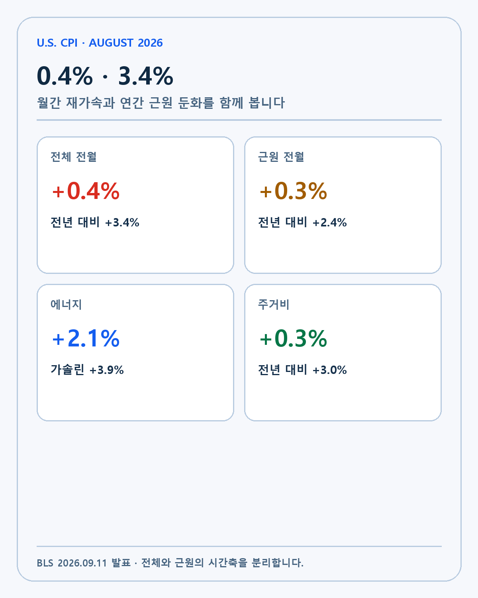
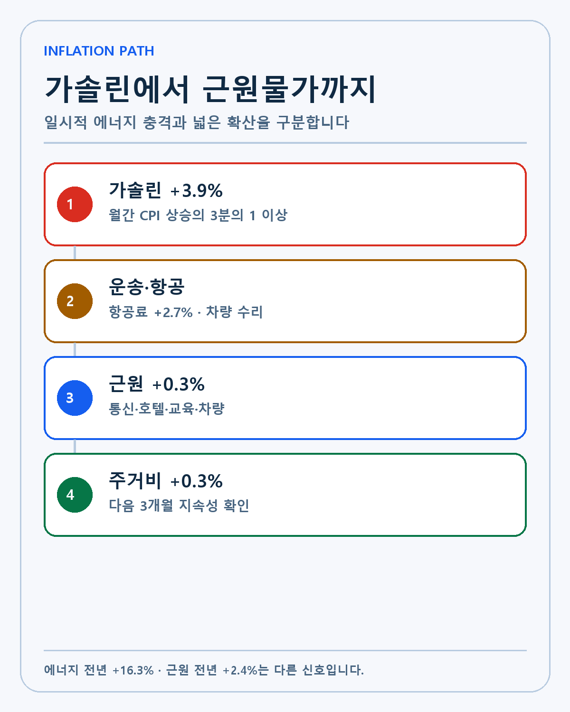
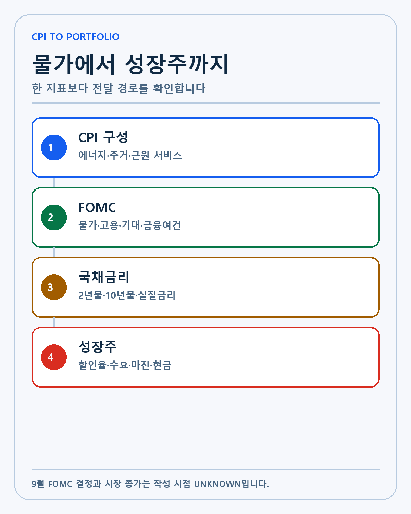
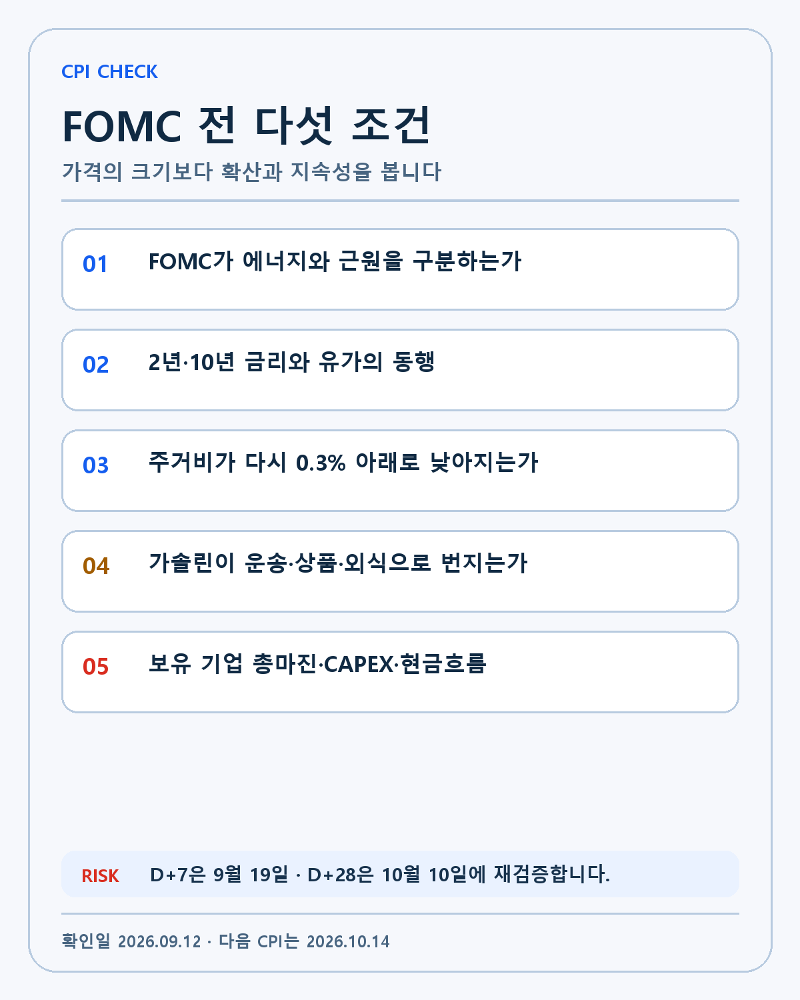

U.S. CPI · DEEP RESEARCH
미국 8월 CPI 3.4% 분석: 가솔린 충격과 근원물가·성장주 할인율을 분리하는 방법
8월 CPI 0.4%·3.4%를 가솔린·근원물가·주거비·FOMC와 성장주 현금흐름으로 나눠 분석합니다.
2026년 8월 미국 소비자물가지수(CPI)는 전월 대비 0.4%, 전년 대비 3.4% 상승했습니다. 월간 상승률은 7월 0.1%에서 크게 높아졌고 연간 상승률은 3.4%를 유지했습니다. 이틀 전 공개된 생산자물가지수(PPI)도 전월 0.4%, 전년 5.4%였습니다.
두 지표의 헤드라인만 나란히 놓으면 물가가 다시 빠르게 오르는 모습입니다. 내부를 보면 조금 다릅니다. CPI 월간 상승분의 3분의 1 이상은 가솔린 3.9% 상승에서 나왔습니다. 식품·에너지를 제외한 근원 CPI는 월간 0.3%로 빨라졌지만 연간 상승률은 2.5%에서 2.4%로 낮아졌습니다.
이 글은 미국 노동통계국의 8월 CPI 원문을 기준으로 전체·근원·에너지·주거·서비스를 분리합니다. 이후 FOMC와 국채금리, 성장주 할인율과 기업 현금흐름으로 이어지는 경로를 살펴봅니다. 확인된 결과와 시장 반응, 제 판단, 아직 알 수 없는 부분을 구분하겠습니다.
전체와 근원 CPI의 시간축이 엇갈렸습니다
| 지표 | 7월 | 8월 | 변화 |
|---|---|---|---|
| 전체 CPI 전월 대비 | +0.1% | +0.4% | 월간 속도 확대 |
| 전체 CPI 전년 대비 | +3.4% | +3.4% | 연간 수준 유지 |
| 근원 CPI 전월 대비 | +0.2% | +0.3% | 월간 압력 확대 |
| 근원 CPI 전년 대비 | +2.5% | +2.4% | 연간 둔화 지속 |
| 에너지 전월 대비 | -1.5% | +2.1% | 방향 전환 |
| 주거비 전월 대비 | +0.1% | +0.3% | 핵심 서비스 재가속 |

전월 수치는 최근 가격의 속도에 가깝습니다. 계절적인 움직임을 제거한 뒤 7월과 8월을 비교합니다. 전년 수치는 1년 동안의 누적 변화를 보여주지만 비교 대상이 매달 바뀝니다. 월간과 연간 수치가 다른 방향으로 움직일 수 있습니다.
8월은 월간 전체와 근원이 모두 높아졌습니다. 연간 전체는 같고 근원은 낮아졌습니다. ‘물가가 둔화했다’와 ‘물가가 다시 빨라졌다’는 문장이 동시에 나오는 이유입니다. 어떤 기간과 어떤 항목을 말하는지 적지 않으면 서로 모순처럼 보입니다.
가솔린이 월간 CPI를 끌어올렸습니다
에너지 지수는 8월에 2.1% 올랐고 전년 대비 16.3% 상승했습니다. 가솔린은 한 달에 3.9%, 1년 동안 27.4% 올랐습니다. 연료유는 10.1% 상승했습니다. 차량 연료 가격이 전체 지수를 크게 움직였습니다.
전기요금은 0.2%, 도시가스는 1.1% 내렸습니다. 에너지 서비스가 모두 오른 것은 아닙니다. 에너지 상품 4.2% 상승과 에너지 서비스 0.4% 하락이 함께 나타났습니다.

가솔린은 CPI에 직접 들어가고 가계의 선택적 소비에도 영향을 줍니다. 주유비가 늘면 외식과 소매, 여행에 쓸 수 있는 돈이 줄어듭니다. 디젤과 항공유 상승은 기업의 운송비와 항공료, 납품 비용으로 이동할 수 있습니다.
에너지 가격은 지정학과 원유 공급에 따라 빠르게 되돌아갈 수 있습니다. 반대로 높은 가격이 몇 달 이어지면 운송·상품·서비스 가격으로 번집니다. 8월 CPI 한 번보다 다음 3개월의 확산 여부가 중요합니다.
근원 CPI의 연간 둔화만 보면 부족합니다
근원 CPI는 전년 대비 2.4% 상승해 7월 2.5%보다 낮아졌습니다. 3개월 연속 둔화했습니다. 에너지와 식품을 뺀 가격의 1년 흐름은 개선되고 있습니다.
월간 근원 CPI는 0.3%로 7월 0.2%보다 높았습니다. 4월 이후 가장 큰 상승입니다. 0.3%가 한 해 동안 반복된다고 단순 연율화하면 연준 목표와 거리가 있는 속도가 됩니다. 다만 한 달 수치는 변동성이 커서 그대로 12개월에 곱할 수 없습니다.
통신은 2.3%, 항공료는 2.7%, 호텔은 2.4%, 교육은 0.8% 올랐습니다. 중고차는 0.4%, 신차는 0.3% 상승했습니다. 의료비는 0.2%, 자동차보험은 0.8% 내렸고 의류와 오락은 보합이었습니다.
근원 지수 안에서도 상승과 하락이 동시에 나타났습니다. 통신·여행·차량이 월간 상승을 이끌었고 의료·보험이 일부 상쇄했습니다. 월간 근원 0.3%가 넓은 서비스 재가속인지 특정 항목 반등인지 다음 자료에서 확인해야 합니다.
주거비는 CPI에서 가장 큰 무게를 가집니다
주거비는 CPI 바스켓의 약 35%를 차지합니다. 8월에는 전월 0.3%, 전년 3.0% 올랐습니다. 임대료와 자가주거비는 각각 0.2% 상승했고 호텔은 2.4% 올랐습니다.
자가주거비는 집값을 직접 넣는 지표가 아닙니다. 주택 소유자가 자신의 집을 빌렸다면 지불했을 임대료를 추정합니다. 시장 임대료 변화가 계약 갱신과 표본을 거쳐 CPI에 들어오기 때문에 시차가 있습니다.
7월 주거비 0.1%는 물가 둔화의 긍정적인 신호였습니다. 8월 0.3%가 한 번의 반등인지 새로운 추세인지는 아직 알 수 없습니다. 호텔의 큰 반등이 주거비 전체를 일부 끌어올렸다는 점도 분리해야 합니다.
식품 물가는 평균보다 체감 차이가 큽니다
식품 지수는 0.1% 올랐습니다. 식료품은 보합이었고 외식은 0.3% 상승했습니다. 달걀은 2.9% 올랐지만 과일·채소는 0.4% 내렸습니다. 외식은 전년 대비 3.4%, 식료품은 2.2% 상승했습니다.
가계마다 소비 바스켓이 다릅니다. 운전을 많이 하고 외식 비중이 높으면 3.4%의 평균보다 더 큰 물가 상승을 느낄 수 있습니다. 전기요금과 의료비 비중이 크면 체감은 다릅니다. CPI는 도시 소비자의 평균적인 가격 변화이지 한 개인의 생활비를 그대로 재현하지 않습니다.
PPI와 CPI는 같은 숫자가 아닙니다
8월 PPI와 CPI가 모두 전월 0.4% 상승했지만 의미는 다릅니다. PPI는 생산자가 상품과 서비스를 팔 때 받는 가격을, CPI는 도시 소비자가 지불하는 가격을 측정합니다. 가중치와 조사 대상이 다릅니다.
PPI에서는 상품 1.1%와 에너지 4.2%, 디젤 24.1%가 강했습니다. CPI에서는 가솔린 3.9%와 에너지 2.1%가 전체를 끌어올렸습니다. 공급망 앞단의 연료 충격이 소비자 가격에도 나타났지만 같은 품목과 같은 폭으로 이동한 것은 아닙니다.
기업은 원가 상승을 마진에서 흡수하거나 판매가격으로 전가합니다. 경쟁이 치열하면 전가가 어렵고, 고객이 꼭 필요한 제품을 공급하면 가격 결정력이 큽니다. PPI와 CPI 사이의 차이는 기업의 마진과 가격 전가를 읽는 단서가 됩니다.
시장 반응은 세 변수의 결합이었습니다
AP의 장중 시장 보도에 따르면 오전 10시30분 기준 S&P 500은 1%, 나스닥은 1.2% 올랐습니다. 브렌트유는 2.5% 내려 배럴당 104.93달러였고 2년물 국채금리는 4.56%에서 4.60%로 상승했습니다.
주식은 올랐고 단기 금리도 올랐습니다. 유가는 내려왔습니다. CPI가 예상 범위에 가까웠다는 안도와 유가 하락이 주식에 도움이 됐고, 금리 시장은 인상 가능성을 더 반영했습니다. 하나의 원인으로 장중 움직임을 설명할 수 없습니다.
시장 종가가 확정되기 전에는 하루 수익률을 쓰지 않겠습니다. 발표 직후 가격은 포지션과 알고리즘 거래, 다른 뉴스에 영향을 받습니다. 다음 날과 일주일 뒤에도 같은 방향이 유지되는지 확인해야 합니다.
FOMC까지 이어지는 판단 경로

연준은 물가의 수준과 방향, 고용과 금융여건을 함께 봅니다. 8월 CPI의 전체 0.4%와 근원 0.3%는 금리 인상 주장에 힘을 줄 수 있습니다. 근원 연간 2.4%의 둔화와 유가 변동성은 일시적 충격을 더 확인하자는 근거가 될 수 있습니다.
2년물 국채금리는 가까운 정책금리 기대에 민감합니다. 10년물은 장기 물가와 성장, 국채 공급과 기간 프리미엄의 영향을 함께 받습니다. 두 금리가 같이 오르는지, 단기물만 더 오르는지에 따라 시장 해석이 달라집니다.
FOMC 결과는 한국시간 9월 17일 새벽에 나옵니다. 점도표와 의장 발언에서 에너지 충격, 근원 서비스와 주거비를 어떻게 평가하는지 봐야 합니다. 인상·동결 결정 하나보다 향후 경로가 중요합니다.
성장주 할인율과 기업 수요
성장주는 미래 현금흐름의 비중이 큽니다. 실질금리와 할인율이 오르면 같은 미래 이익의 현재 가치가 줄어듭니다. 기술 경쟁력이 바뀌지 않아도 시장이 지불하는 배수가 달라질 수 있습니다.
가솔린과 주거비 상승은 소비자의 선택적 지출을 줄일 수 있습니다. 스마트폰과 자동차, 여행과 구독 서비스에는 수요 부담이 될 수 있습니다. 기업용 AI, 국방과 우주 계약은 다른 예산에서 움직이지만 고객의 자본비용은 금리의 영향을 받습니다.
현금흐름이 강한 기업은 높은 금리에서도 연구개발과 CAPEX를 유지할 수 있습니다. 외부 조달이 필요한 기업은 이자비용과 희석 위험이 커집니다. 같은 성장주라는 이름보다 가격 결정력, 계약 구조와 현금 보유를 확인해야 합니다.
예상 대비와 절대 수준은 다른 질문입니다
8월 CPI는 시장 예상 범위에 가까웠습니다. 예상과 큰 차이가 없으면 발표 직후 변동성이 줄 수 있습니다. 그러나 전년 3.4%와 에너지 16.3%는 경제적으로 낮은 수준이라고 부르기 어렵습니다.
시장은 미래를 미리 가격에 반영합니다. 높은 CPI가 예상돼 주가가 먼저 하락했다면 예상과 같은 결과가 나왔을 때 되돌림이 나올 수 있습니다. 낮은 숫자가 나와도 이미 더 낮은 결과를 기대했다면 주가는 내릴 수 있습니다.
투자 기록에는 두 줄이 필요합니다. 첫 줄은 컨센서스 대비 실제이고, 둘째는 장기 기준 대비 실제입니다. 예상 오차는 단기 가격 반응을 설명하고 절대 수준과 추세는 기업의 할인율·비용·수요 환경을 설명합니다.
월간 0.3%를 연율화할 때의 주의점
월간 근원 CPI 0.3%가 12개월 반복된다고 가정하면 단순 곱셈보다 복리 계산이 필요합니다. 그러나 항공료와 호텔, 통신 같은 항목은 매달 같은 폭으로 움직이지 않습니다. 한 달 수치를 기계적으로 연율화하면 추세를 과장할 수 있습니다.
대신 최근 3개월과 6개월의 평균, 전년 상승률을 함께 봅니다. 월간 상승률이 여러 달 같은 방향으로 유지되는지, 상승 항목의 비중이 넓어지는지 확인합니다. 8월의 0.3%가 특정 서비스 반등인지 넓은 근원 재가속인지 구분할 수 있습니다.
계절조정 수치도 매년 수정될 수 있습니다. BLS는 계절 요인을 갱신해 최근 몇 년의 월간 지수를 다시 계산합니다. 작은 차이에 과도한 확신을 두지 않고 방향과 폭을 함께 기록하겠습니다.
물가의 폭을 확인하는 방법
전체 CPI가 높아도 소수 항목이 대부분을 만들 수 있습니다. 8월에는 가솔린의 기여가 컸습니다. 근원 안에서는 통신·항공·호텔·차량이 올랐고 의료·보험은 내렸습니다.
폭이 넓어지는지는 상승 항목의 수와 비중, 지속 기간으로 봅니다. 에너지 가격이 운송·상품·외식으로 이동하고 주거·서비스까지 같은 방향을 보이면 충격이 넓어진 것입니다. 가솔린이 내려갈 때 전체 CPI도 빠르게 낮아지면 일시적 충격 설명이 강해집니다.
기업 실적에서도 폭을 확인할 수 있습니다. 여러 산업의 경영진이 동시에 에너지·운송·임금 압력을 말하고 총마진이 내려간다면 CPI 밖의 사업 증거가 쌓입니다. 일부 산업만 영향을 받으면 종목별 차별화가 커집니다.
포트폴리오 산업별 연결
AI 반도체와 데이터센터는 전력·냉각·건설비와 장비 운송에 노출됩니다. 높은 물가와 금리는 CAPEX의 자본비용을 올리지만 고객이 더 많은 유료 AI 서비스를 만들면 투자 경제성을 유지할 수 있습니다.
우주 기업은 발사와 위성 생산, 추진제·복합재와 물류 비용을 봐야 합니다. 장기 정부 계약에는 가격 조정 조항이 있을 수 있지만 고정가격 계약은 원가 상승을 기업이 부담할 수 있습니다.
바이오 기업은 임상 운영과 제조, 전문 인력 비용에 영향을 받습니다. 아직 현금흐름이 없는 기업은 높은 금리에서 자금조달 부담이 더 큽니다. 같은 CPI라도 산업과 기업의 계약 구조에 따라 현금흐름 효과가 다릅니다.
세 가지 시나리오
강세 시나리오는 유가와 가솔린이 진정되고 주거비·근원 서비스가 다시 둔화하는 경우입니다. 연간 근원 CPI의 하락 흐름이 이어지면 할인율의 추가 상승 부담이 낮아질 수 있습니다.
기준 시나리오는 에너지 가격이 높지만 다른 상품과 서비스로 넓게 번지지 않는 경우입니다. 연준은 높은 금리를 유지하며 다음 CPI와 PCE를 확인할 수 있습니다. 주가는 기업별 실적과 현금흐름에 따라 갈릴 가능성이 큽니다.
약세 시나리오는 가솔린과 디젤 상승이 운송·식품·상품에 전가되고, 주거비와 월간 근원 CPI 0.3% 이상이 반복되는 경우입니다. 금리·비용·소비 여력의 세 부담이 동시에 커질 수 있습니다.
앞으로 확인할 다섯 항목
- FOMC가 가솔린 충격과 근원 CPI를 어떻게 분리하는지 확인합니다.
- 2년물·10년물 국채금리와 유가의 동행을 기록합니다.
- 주거비 월간 상승률이 0.3% 아래로 다시 낮아지는지 봅니다.
- 운송·상품·외식 가격으로 에너지 충격이 퍼지는지 확인합니다.
- 보유 기업의 총마진·CAPEX·현금흐름 가이던스 변화를 봅니다.

다음 확인일은 9월 19일과 10월 10일입니다. D+7에는 FOMC와 국채금리, 성장주 반응을 묶어 봅니다. D+28에는 유가 충격이 CPI의 다른 항목으로 이동했는지 확인합니다. 다음 9월 CPI는 미국 동부시간 10월 14일 오전 8시30분에 공개됩니다.
제 투자 판단
저는 미래에 필요한 기술과 기술 경쟁력을 먼저 봅니다. 판단 순서는 기술, 해자, 창업자와 경영진, 성장률, 현금흐름입니다. 한 달 CPI가 좋은 기업의 기술을 바꾸지는 않습니다.
물가와 금리는 기업 가치에 적용하는 가격과 사업 환경을 바꿉니다. 높은 금리에서도 고객에게 큰 경제적 가치를 주는지, 연구개발과 생산능력 투자를 감당할 현금이 있는지 확인합니다. 월급날 장기 투자 계획은 유지하지만 매수 가격과 기업별 위험은 다시 계산합니다.
8월 CPI에서 확인된 것은 월간 물가가 빨라졌고 가솔린의 기여가 컸다는 사실입니다. 근원 연간 상승률은 낮아졌지만 월간 근원과 주거비는 다시 높아졌습니다. FOMC 결과와 다음 3개월의 확산 여부가 이 충격의 지속성을 판별합니다.
이 글은 개인 투자 기록이며 특정 종목의 매수·매도를 권유하지 않습니다. 경제지표는 수정될 수 있고 시장 가격에는 여러 요인이 동시에 영향을 줍니다. 모든 투자 판단과 책임은 투자자 본인에게 있습니다.
작성 방법
2026년 9월 12일 기준 공식 자료와 공시를 우선하고 실제·회사 전망·시나리오·UNKNOWN을 분리했습니다.
개인 투자 기록이며 특정 종목의 매수·매도를 권유하지 않습니다.